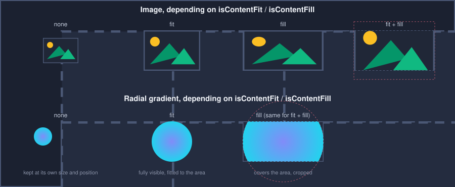
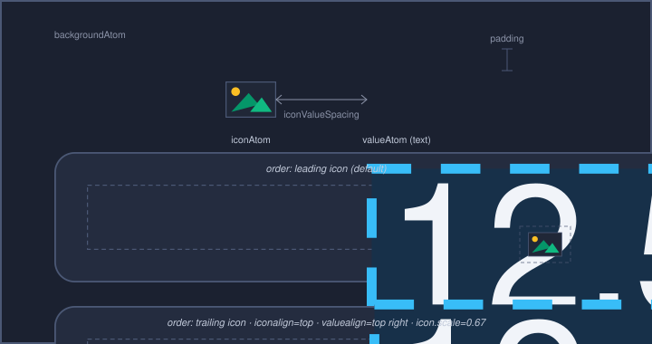

Render Atoms
A single control is rarely just one flat shape - a button has a background, an optional icon and a text label; a slider has a track and a handle. Rather than give every one of these pieces its own bespoke style syntax, renderers built on <RenderAtom> break a control down into a small, fixed set of named, reusable building blocks called render atoms (e.g. background, icon, value) - referred to simply as atoms for brevity throughout the rest of this chapter. Each render atom is a generic rectangular building block that can carry a fill (solid color, gradient or image) or text, and (optionally) a border - and every one of those aspects is addressed as an ordinary property in a Style.
Which atoms a control exposes, and what they are called, depends on the renderer behind it - different controls declare different atoms. What all of them share is the <RenderAtom> property set and the addressing scheme described here; BIVRenderer (covered below) is one concrete example.
Atom Properties
An atom’s properties are grouped like this:
offsetx, offsety |
point offset added to the atom’s position while drawing |
scale |
uniform scale factor applied around the atom’s own center; left unset (or |
rotation |
rotation in degrees, applied around the atom’s own center while drawing |
color |
the atom’s fill - a solid color or a gradient, see Colors |
opacity |
|
bordercolor, borderwidth |
an outline drawn around the atom |
borderlefttopradius, borderleftbottomradius, borderrighttopradius, borderrightbottomradius |
independent corner rounding for both the fill and the outline |
contrastcolorbright, contrastcolordark, contrastcolortransparent, contrastcoloralphablend |
colors a renderer can draw text or an icon in to stay legible against a color known only at runtime, see Contrast Colors |
image, imageframe |
an image (or one frame of a multi-frame image) drawn instead of the solid/gradient fill |
All of these accept an <Animation> and can be overridden per <StyleCondition>, exactly like any other style property.
By default, an atom with an image does not fill its area with color. If the image has the template or adaptive attribute (see <Image>), color colorizes it; any other image is drawn as it is.
Contrast Colors
Some controls know a color only at runtime - typically the color of a colorname parameter - and keep text or an icon legible against it. The contrast colors of the atom decide the color it is drawn in, checked in this order:
the runtime color is transparent:
contrastcolortransparentcontrastcolorbrightis set:contrastcolorbrighton a dark runtime color (luminance below0.35),contrastcolordarkon a bright onecontrastcoloralphablendis set: the runtime color, blended withcontrastcoloralphablendotherwise: the runtime color itself
contrastcolordark and contrastcolortransparent default to the color of the atom. A control can also keep the color of the atom as long as neither contrastcolorbright nor contrastcoloralphablend is set - its style says so.
Addressing Atom Properties
An atom’s properties are addressed from a <Style> by prefixing the property name with the atom’s name and a dot: <atomName>.<property>. A plain <Metric>, <Color> or gradient element then targets it like any other style property:
<Style name="AccentButton" inherit="Standard.Button">
<LinearGradient name="background.color" startcolor="red" endcolor="magenta"/>
<Metric name="background.borderlefttopradius" value="20"/>
<Metric name="background.borderrightbottomradius" value="20"/>
<Color name="value.color" color="white"/>
<StyleCondition name="mouseover">
<Metric name="value.scale" value="1.3"/>
<Metric name="value.rotation" value="30"/>
</StyleCondition>
</Style>
Here background and value are atom names; background.color, value.scale and value.rotation each address one property on one atom. A <StyleCondition> (here: mouseover) overrides atom properties the same way it overrides any other style property.
When color is set to a gradient, its start/end points (or center/radius) are computed automatically to cover the atom - explicit geometry authored on the <LinearGradient> or <RadialGradient> element itself is only honored when isContentFit and isContentFill are both unset (see below).
Fitting Content
An atom’s image and (gradient) fill both react to two flags, isContentFit and isContentFill, in the same way images do on the web with object-fit: contain / cover / fill / none. These two flags are not style properties - they are fixed per atom by the renderer that owns it (e.g. a background atom that is meant to always cover its control regardless of aspect ratio), not something a skin author overrides per instance.


fit + fill - cover the area, preserving aspect ratio: the content gets cropped
fit - fit into the area, preserving aspect ratio: the area is not fully covered
fill - fill the area, distorting the content to match it exactly
none - keep the content at its own original size, centered in the atom
A radial gradient’s shape is a plain, non-elliptical circle, so it cannot be distorted the way an image can: isContentFill alone already produces the same cropped, fully-covering circle as fit + fill. A linear gradient has no aspect ratio of its own either way, so it keeps spanning the atom’s full width whenever either flag is set. For both kinds of gradient, leaving both flags unset leaves the gradient at whatever size and position it was last given, instead of resizing it to the atom.
The BIVRenderer
BIVRenderer (“Background-Icon-Value”) is the renderer behind controls that show an icon and/or a text value on top of a background - for example <Button> and <SelectBox>. It declares exactly three atoms - background, icon and value - addressed as described above (e.g. icon.opacity, value.color).


Besides the three atoms, its <BIVStyle> adds a handful of layout-only properties that arrange the icon and value within the control, rather than styling either one of them directly:
- iconvaluespacing:
gap kept between the icon and the value when both are present
- iconleading:
draws the icon before the value instead of after it
- iconfillfactor:
the icon’s size relative to the content area, aspect ratio kept -
1fills the area, more than1reaches beyond it; left unset (or0) the icon keeps the size of its image- iconalign:
vertical alignment of the icon within the content area (default: vertically centered);
left/rightalso align an icon that has no value next to it- valuealign:
vertical alignment of the value within the content area, and horizontal alignment of the icon/value group as a whole within the control (default: falls back to the general
textalignproperty)
<Style name="Standard.Button">
<Metric name="iconvaluespacing" value="6"/>
<Metric name="iconleading" value="1"/>
<Metric name="iconfillfactor" value="0.8"/>
<Align name="valuealign" align="left vcenter"/>
</Style>
iconfillfactor and the icon atom’s icon.scale look similar but are not interchangeable. iconfillfactor is a layout property: it sizes the icon’s box relative to the control’s content area, so the icon grows and shrinks with the control, and iconvaluespacing, the alignments and the control’s minimum size all see that box. icon.scale is a draw-time transform: it scales the drawing inside a box that keeps its layout size, relative to the image’s own pixel size rather than to the control. Use iconfillfactor to give an icon its size, and icon.scale in a <StyleCondition> or <Animation> to emphasize it temporarily.